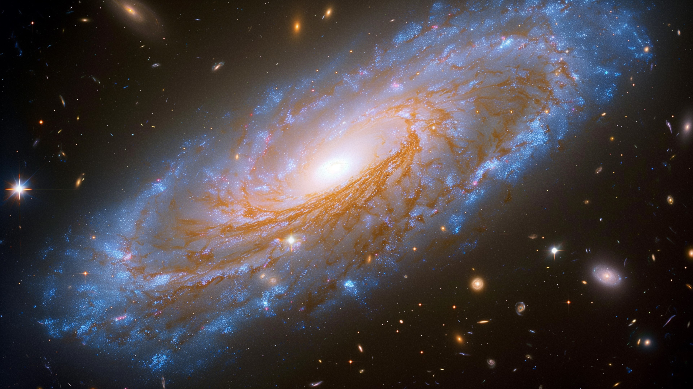
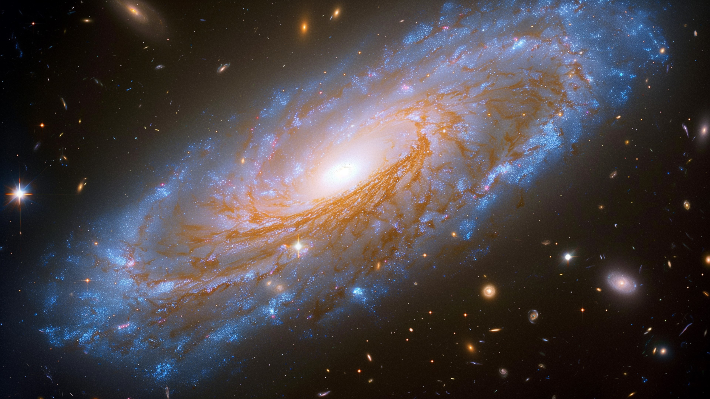

Destaques do momento
Lançamento em breve
Um novo satélite vai monitorar o clima da Terra com tecnologia de ponta.
Visão Estelar
O Telescópio James Webb capturou uma galáxia impressionante esta semana.
Por meio dos projetos de ciência cidadã da agência
voluntários trabalham
com pesquisadores da NASA para fazer
descobertas científicas significativas
procurar vida em outros
lugares e proteger e
melhorar a vida na Terra e no espaço.
Um novo satélite vai monitorar o clima da Terra com tecnologia de ponta.
O Telescópio James Webb capturou uma galáxia impressionante esta semana.
